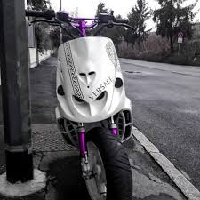
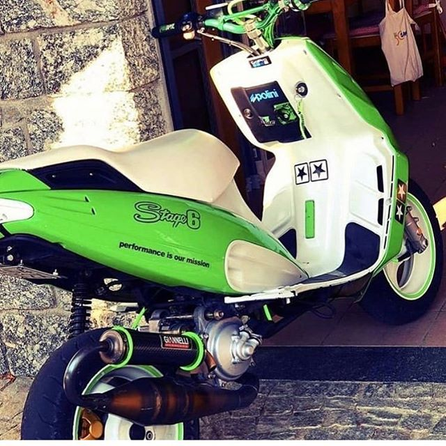
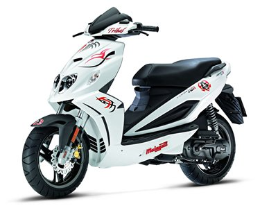
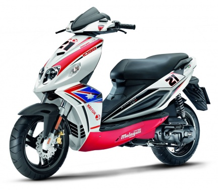

l Malaguti Phantom è stato uno scooter presentato nel 1994 dalla casa motoristica Malaguti; Ripercorriamo storia e caratteristiche dell’f-12.La cilindrata che caratterizzava questo scooter alla sua presentazione era di 50 cm3. Questo modello incontrò subito un grande successo tra i più giovani, confrontandosi degnamente con gli altri competitor del mercato di quegli anni, come ad esempio Booster o Aerox di Yamaha. Malaguti Pahntom è stato prodotto dal 94 (anno della presentazione ufficiale) fino all’anno 2006; le versioni prodotte erano due, sempre con la sigla F12. I due modelli si differenziavano per il tipo di impianto di raffreddamento installato (a liquido o ad aria).Malaguti Phantom veniva prodotto in diverse cilindrate. Le cilindrate erano 50 cm3, 125 cm3, 200 cm3 e 250 cm3. I modelli di Phantom Malaguti caratterizzati da cilindrate superiori ai 50 cm3, erano definiti Phantom Max. Indipendentemente dalla cilindrata, questi modelli di scooter erano tutti dotati di motori Piaggio a 4 tempi (Piaggio Leader sul 125 e Quasar sul 250). Le differenze estetiche del telaio tra i vari modelli erano minime. L’aspetto che differenziava leggermente i modelli era la conformazione del faro posteriore.Caratteristiche del f12 dopo il grande successo di Phantom Malaguti, per tutta la seconda metà degli anni novanta e i primi sei anni degli anni duemila, nel 2007, uno degli scooter più amati dai giovani italiani, a quindici anni dal debutto, si rinnovava. Il modello del 2007 era decisamente innovativo per il periodo; linee ispirate agli aerei caccia dell’aeronautica, che ha saputo conquistare in quindici anni, il gradimento di oltre 360.000 giovani.L’intramontabile modello del Phantom Malaguti F12, nel 2007 si è rifatto il look e si è arricchito delle due versioni Capirex e Tribal, che erano dedicate ai più giovani. La versione Capirex era frutto di un’importante collaborazione con la Ducati (una sorta di versione replica in piccola scala dell’allora Ducati Moto GP7, la grande moto in testa in quegli anni delle classifiche mondiali della classe Moto Gp).Il nuovo modello di Phantom Malaguti F12 era legato alla figura del pilota campione Loris Capirossi; la carena dello scooter, ricalcava infatti il 65, numero di gara del campione. Loris Capirossi è stato sicuramente un grande campione sulla pista e fuori, grazie al suo grande impegno a sostegno della guida sicura; Loris Capirossi è stato infatti testimonial d’eccezione per molte campagne a favore della sicurezza stradale.Per quanto riguarda invece la versione Tribal di Phantom Malaguti, essa era dedicata allo Street style; oltre alle tipiche linee aggressive del Phantom, questa versione presentava particolari linee, molto di tendenza all’epoca. La carena bianca era infatti interessata da disegni neri. Questi ricordavano i caratteri dei tatuaggi tribali in voga tra i teenager. Entrambe le versioni erano disponibili sia con motorizzazione raffreddata ad aria che con propulsore liquid cooled.Vendite in Italia Phantom Malaguti in Italia, questo scooter lanciato sul mercato nel 1994, ha venduto in Italia oltre 400.000 esemplari. Phantom Malaguti si è posizionato al primo posto delle vendite degli scooter sportivi con cilindrata 50 cm3. Il suo grande successo è stato sicuramente determinato, oltre che dalle sue linee aggressive e accattivanti, molto apprezzate dai giovani (soprattutto nella versione nata dalla collaborazione con Ducati), anche dalla sua dinamicità.Questo scooter è risultato certamente molto facile da guidare, leggero, scattante, aerodinamico; il motoveicolo ideale per tutti quei giovani che si trovavano alla prima esperienza con uno scooter, e tuttavia non volevano rinunciare ad ottime prestazioni che questo scooter certamente garantiva. Ovviamente, nel rispetto di quelli che sono i più alti standard di sicurezza stradale, in ogni situazione metereologica.
 Il Malaguti Phantom è uno scooter presentato inizialmente nella cilindrata 50 cm³, nato nel 1994 dalla casa motociclistica Malaguti incontrando un buon successo soprattutto tra i ragazzi giovani, confrontandosi con gli altri modelli di successo del mercato come ad esempio il Booster, o l'Aerox della Yamaha.Fino al 2006 è stato prodotto in due versioni con la sigla F12, diverse per il tipo di impianto di raffreddamento, a liquido o ad aria, ed anche in versioni di cilindrata superiore, da 100, 125, 200 e 250 cm³. I modelli con cilindrate da 125 cm³ e superiori sono detti Phantom Max, hanno tutti motore a 4 tempi (Piaggio Leader sul 125, Quasar sul 250) con raffreddamento a liquido, un telaio più grande, ed alcune differenze estetiche rispetto alle versioni 50 e 100 cm³ (come la conformazione del faro posteriore completamente diversa).Nel 2006 è stato presentato il nuovo modello 50 cm³, ovvero il Phantom F12R.Il modello F12R è motorizzato con un propulsore Minarelli in posizione orizzontale per la versione a raffreddamento a liquido con doppio freno a margherita, mentre per la versione a raffreddamento ad aria monta un motore della Keeway Motors con freno anteriore a margherita e posteriore a tamburo. Alimentato da un carburatore Gurtner Phva 12 mm.L'elettronica per tutti i modelli è realizzata da Ducati Energia, con versioni diverse in base all'omologazione dello scooter: i modelli Euro 0 o Euro 1 sono equipaggiati con l'accensione Ducati a 6 poli, mentre i modelli Euro 2 e superiori sono equipaggiati con una versione più recente a 12 poli. Sempre in questi ultimi modelli l'impianto elettrico vede la presenza di un regolatore di carburazione agente sul circuito del minimo, di un sensore di posizione del comando gas (tps) e di una centralina che gestisce la carburazione e l'anticipo, al fine di abbattere le emissioni inquinanti.Il Phantom nel corso della sua storia ha subito modifiche di piccola natura sino all'avvento del modello 2007; il primo aggiornamento ha interessato la linea, ridisegnando la pedana (ampliando l'appoggio destinato al passeggero) e modificando il disegno della sella, eliminando il guscio in plastica, lasciando un sellone biposto con maniglie per il passeggero ben integrate nella linea complessiva del mezzo infine è stata modificata la mascherina del fanale posteriore.Oltre a questo la strumentazione si è evoluta, abbandonando gli strumenti analogici in favore di un display LCD multifunzione, con comando sul blocchetto sinistro per poter accedere alle varie modalità. Il display occupa il posto centrale della strumentazione, negli altri 2 spazi sono alloggiate le spie di servizio come quelle per fari e frecce.Nel corso degli anni sono stati modificati gli impianti di frenata, fino al 1999 le versioni ad aria e a liquido montavano posteriormente un freno a tamburo mentre successivamente nella versione a liquido è stato introdotto il freno a disco ed è stato montato un nuovo cerchio da 13".Ci sono molte case che costruiscono pezzi speciali per migliorare le prestazioni del motore, tra cui Polini, Malossi, Top performances, Pinasco e molte altre specializzate nell'estetica.
 